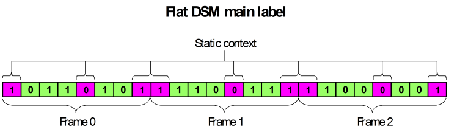
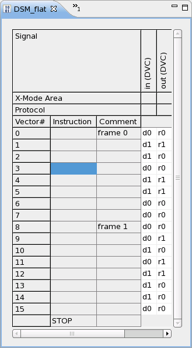
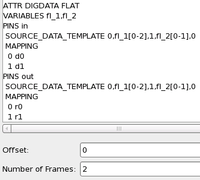

Flat DSM setup
In a normal DSM setup, the static context and the variable source data are stored in separate labels. The source data is applied to the source pins from the main label within a loop. A possible risk of this construction is that since decoding of the loop instruction is time consuming, it may lead to an empty data queue exception (see How to prevent the data queue from running empty).
This can be avoided by storing both the static context and the source data in the main label and coding the sequencer program without a loop. With this so-called flat setup, the static context will have to be stored as often as it is to be applied, but if its size is small this will be no major problem. Furthermore, this disadvantage may be compensated by the fact that the source data will usually require less memory space in a flat setup. Note, however, that a flat setup requires all pins to be source pins.
The main difference between a flat DSM label and a standard main label is that the flat DSM label is connected to a DSM setup. This connection allows you to modify the source vector data at runtime with the VECTOR API and also to apply different source vectors to different sites.
The following figure illustrates the basic structure:

Example
The following pictures show a flat DSM main label and the DSM setup to which it is attached:


There is no SSRC instruction, and also no "SRC" code in the label. But as with a separate DSRC label, it is illegal to insert any sequencer instruction or vectors into a flat DSM main label. The label is not shown here in expanded mode because there is no difference between the expanded and the collapsed mode.
The FLAT
attribute in the first line of the vector variable definitions implies that a label that is
connected to this DSM setup must be a main label. It also declares both pins as source pins. The
static context is also defined in the source data template: The waveform corresponding to 0 is
executed at the start and the end of every frame on both pins. The waveform corresponding to 1
is executed between vector variables fl_1 and fl_2. There are
separate PINS blocks for the two pins because their device cycle names are to
be used in the MAPPING statement, and these device cycle names are
different.
Functional changes
- Introduced before SmarTest 6.3.2